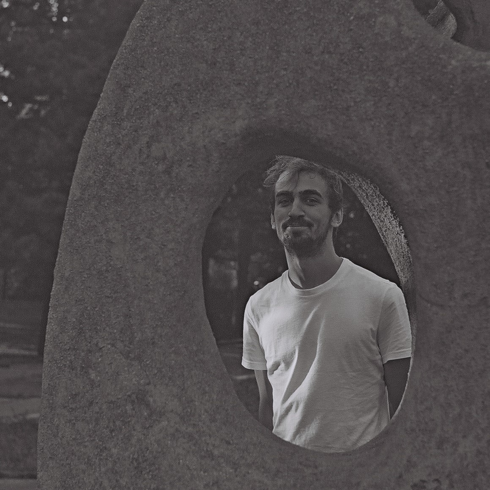
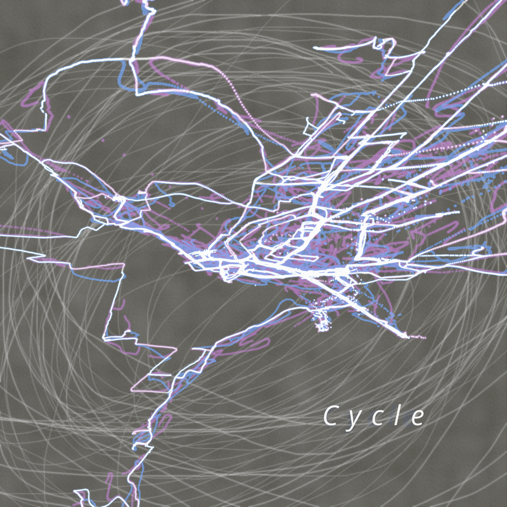
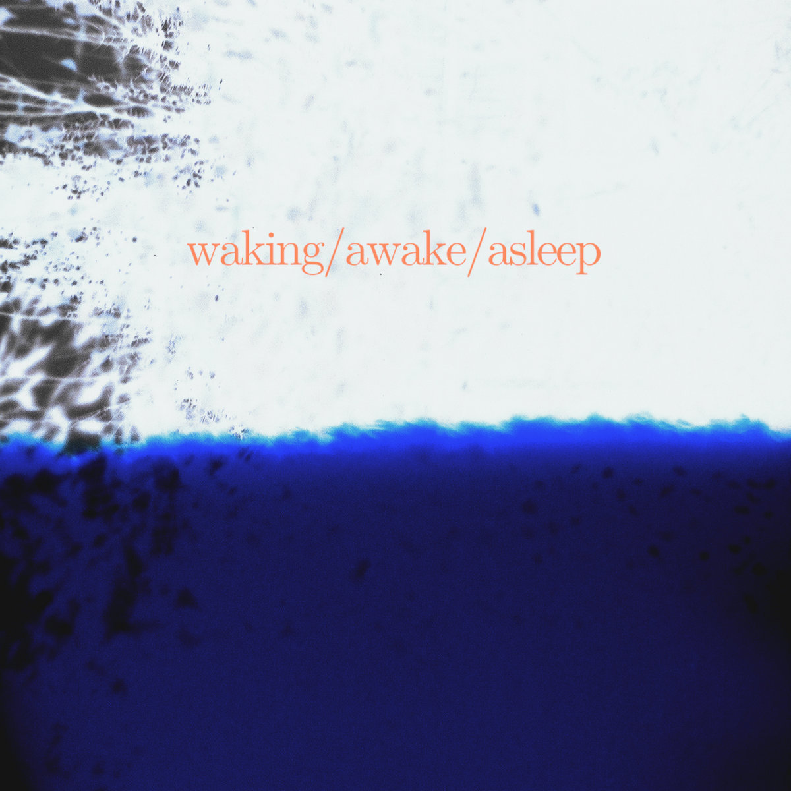
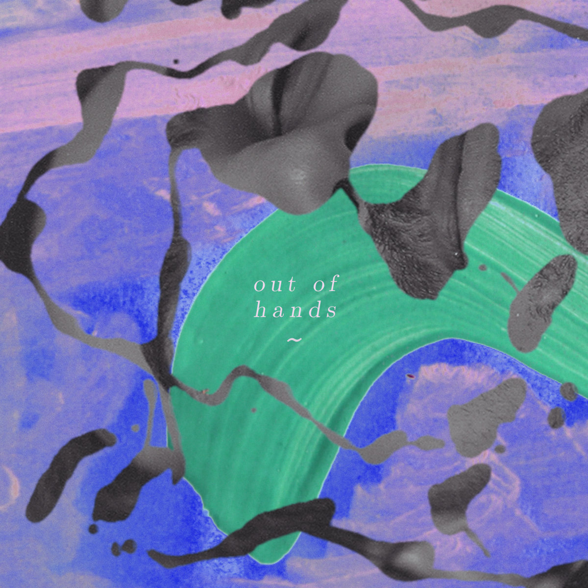
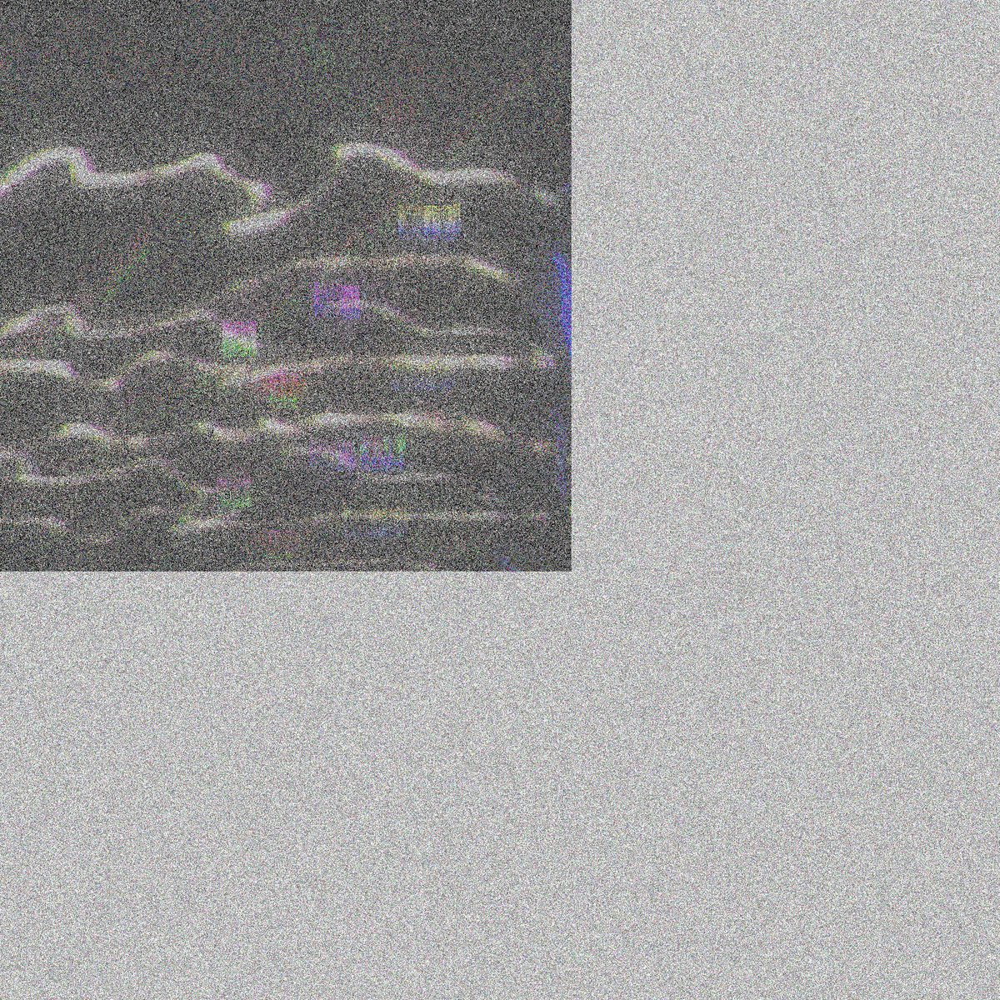

sound art / music / software / ...

experimental music / field recording

ambient music / field recording

DIY songwriting project

sound design études

synesthetic performance - spatial sound + 3D visuals
interactive installation / performance
interactive installation / performance
Projekt pre festival Sonda 2022 v rámci projektu Trychtýř.
Diváci interpretujú partitúru pomocou svetla mobilov.
Filip Dobrocký: sound design, technické prevedenie (OpenCV, Max/MSP)
Matúš Stenko: vizuál
interactive piece
Parafráza na skladbu Atlas Eclipticalis (John Cage). Sonifikácia NASA Astronomy Picture of the Day (Max/MSP, OpenCV).
polyrhythmic microtonal groovebox (VSTi)
real-time object based video sonification system based on AI computer vision algorithms (Python app)